ARC 401 · Studio Eagle Bull
The Story
The Yavapai-Apache Cultural Center, and the people who used it
Dennis Numkena's Yavapai-Apache Cultural Center stood at the Montezuma Castle interchange near Camp Verde, Arizona, until it was lost to fire. This project reconstructs it from what survives, and tells its story through the people who rode, walked and gathered there.
Begin01A Memory
The Bike Ride
We used to ride our bikes over to the cultural center to cool off in the summer.
A memory shared by a member of the local community
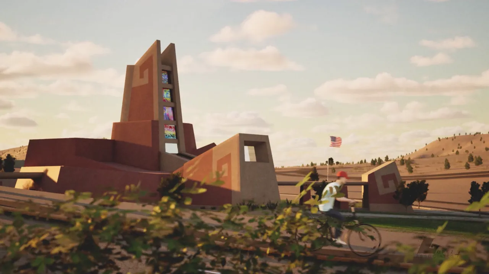
Our film, The Bike Ride, starts from that one sentence.
It recreates the trip from a resident's point of view: across the valley, through the gateway and into the building. The center is seen the way the people who used it knew it, as a place you could reach on your own, cool down in and wander through.
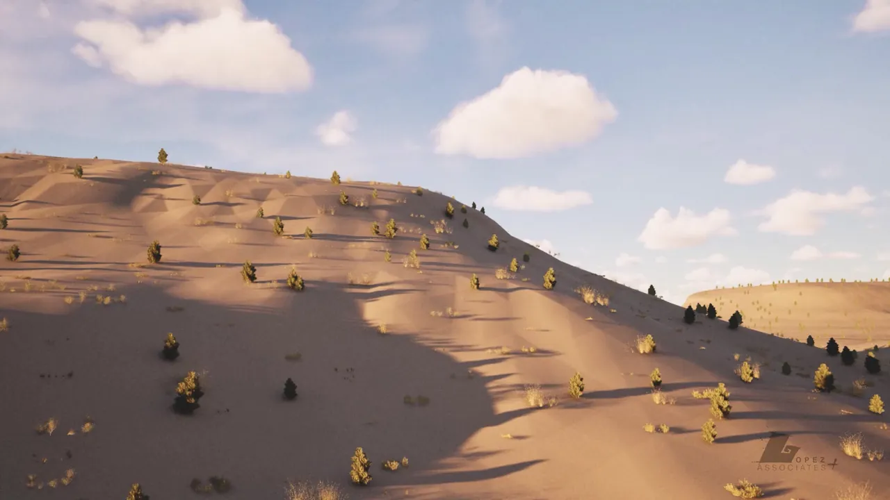
The valley
Open desert and hills on the way in.
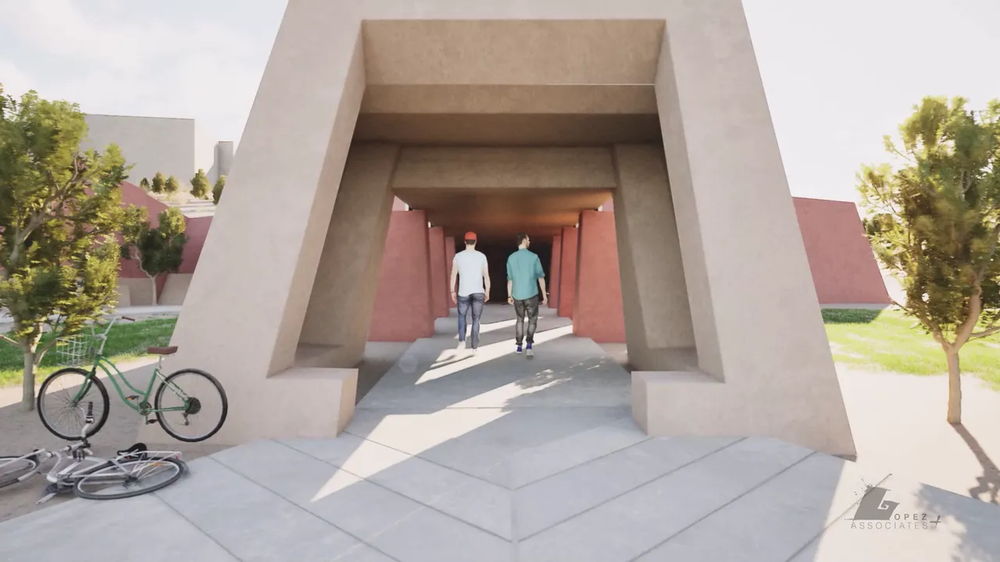
The gateway
Bikes down at the entry portal, then in under the ramada.
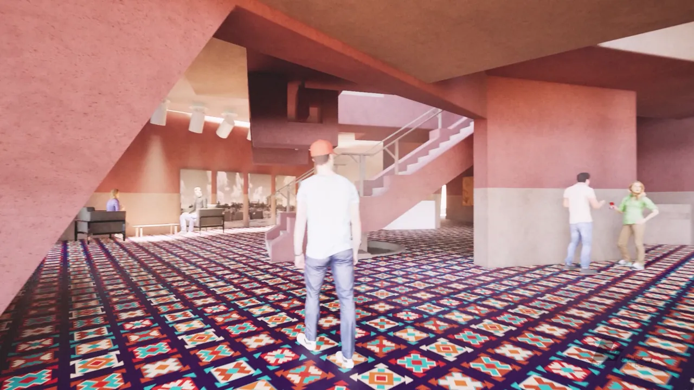
The lobby
The patterned carpet and the stair beneath the tower.
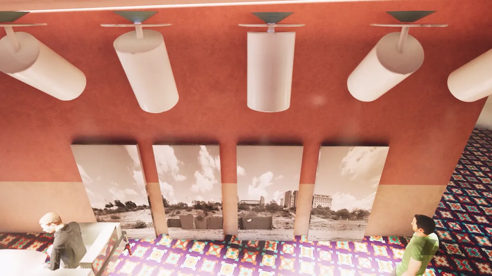
The exhibits
Photographs of the region along the walls.
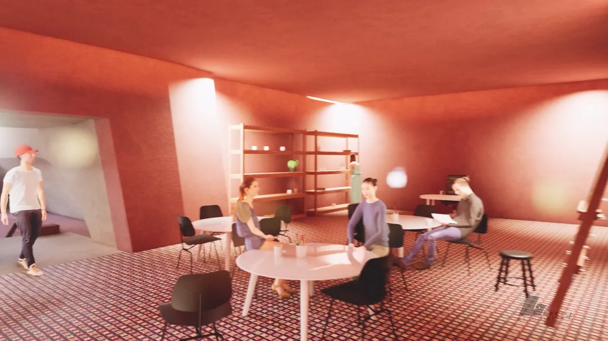
Upstairs
The arts and crafts room, busy around its tables.
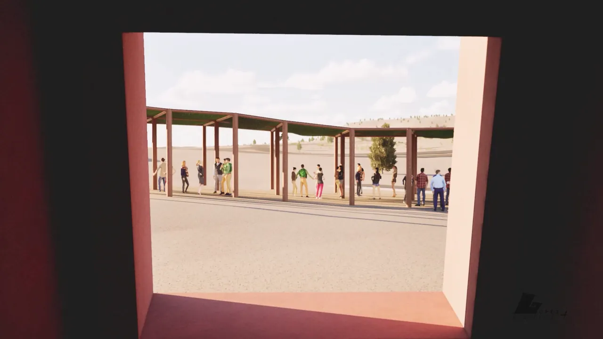
The ramada
People gathered in the shade outside.
02A Gathering Place
More Than a Building
The bike ride is one of many memories the community shared about what the center meant to the people who used it.
For visitors
A place to learn about Yavapai-Apache culture.
For the community
A place to gather, connect and share their heritage.
For Numkena
Architecture as a home for community and cultural identity, especially for Native communities.
The loss
The Cultural Center was lost to fire. With it went more than a building: a gathering place, and a physical representation of the community's culture and history.
This project is an effort to bring that place back into view.
03The Building
Where Its Shape Came From
The center was first conceived to house administration for Montezuma Castle and to welcome the site's growing number of visitors. Numkena, a Hopi architect, set out to connect the land, its history and its people.
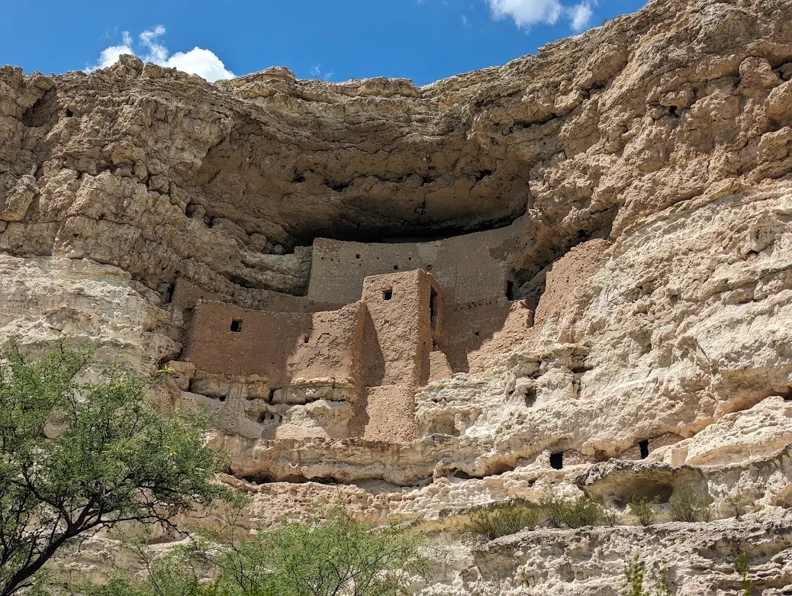
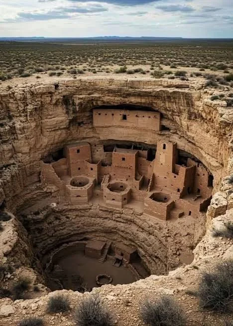
Slanted forms
Drawn from the leaning walls of Montezuma Castle.
Many rooms
The castle's stacked, multi-room dwelling, echoed in the building's cluster of volumes and its tall tower.
Earth colors
The castle's earthy palette, carried into the walls.
The tower
Five stories above the lobby. Numkena tied its rise to the Hopi belief in the rise into the fourth and most perfect world.
Spirals
Repeated across the tower and walls.
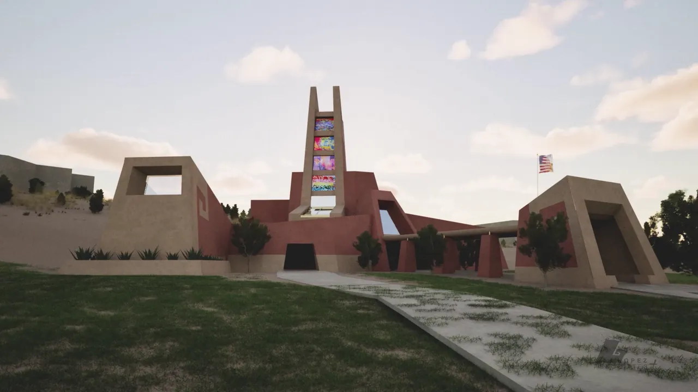
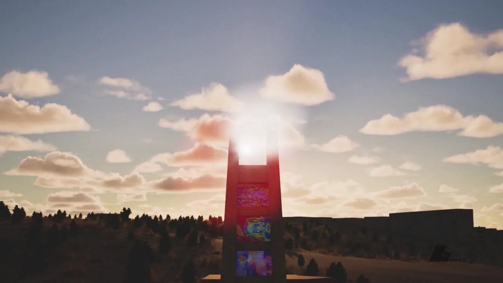